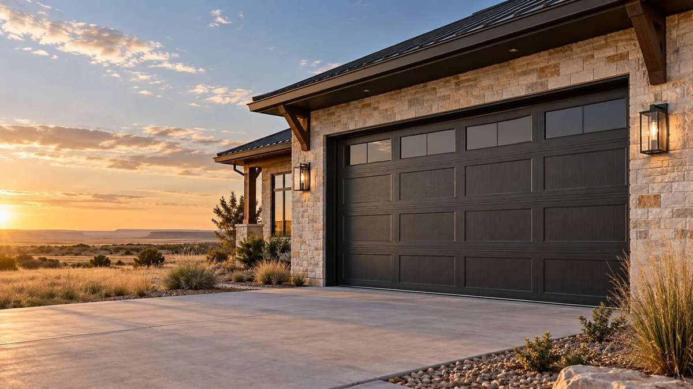
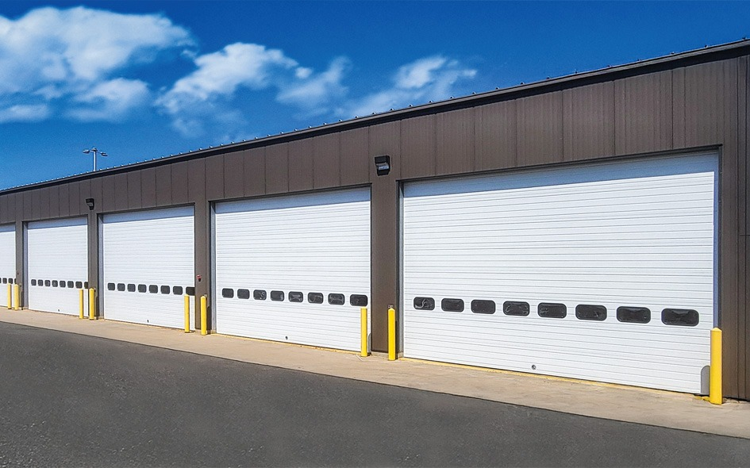

Good doors.
Great service.
Right here at home.
Garage door trouble? Ready for a new look? We make it easy to find the right help for your home or business.
No technical terms needed. Prefer to talk? 806-372-5884

What brings you in today?
A repair, a new look, or a project for your business. Choose the help you need.
 Service & repair
Service & repairGet your door working.
Repairs, openers, and preventive maintenance.
 For your home
For your homeLove the way you come home.
Garage doors, openers, and a style that fits.

For your businessKeep your business moving.
Commercial doors, operators, and facility service.
Start with what
you’re seeing.
You don’t have to diagnose the problem. Tell us what the door is doing.
View all repair servicesRepair or replace?
LASTING SUPPORT.
A familiar name.
A team right here.
We’ve served Amarillo and the Texas Panhandle since 1968. Visit our showroom, talk through a project, or get help with a door you already own.
Find your next first impression.
Explore real collections, compare the details, and see a style on your home.


Good questions.
Simple answers.
Find the basics before you get started.
All common questionsDo you repair other brands?
Yes. We service what we sell and most other makes and models of doors and openers. Tell us the brand if you know it; it’s fine if you don’t.
Do I need measurements to request help?
No. For a new door, opening width and height are useful if you already know them. For repairs, the symptoms and current door position are usually more useful. Our technician can verify dimensions.
Does a request book an appointment?
No. A request starts the conversation. Our office will confirm the details, availability, and any service charges before an appointment is arranged.
Can I visit the showroom?
Yes. Visit 4111 Northwest 10th Avenue in Amarillo, Monday–Friday, 7:30 am–4:30 pm. Call 806-372-5884 if you’d like to discuss a specific product.
Let’s get your door moving.
Tell us what you need. Our Amarillo team will take it from there.